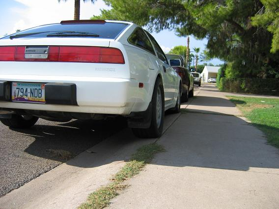
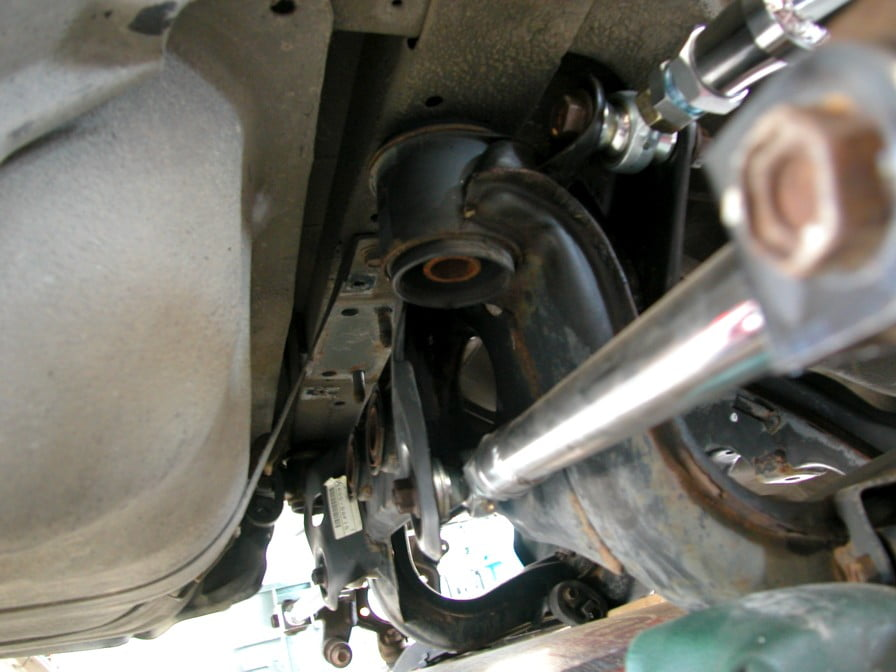
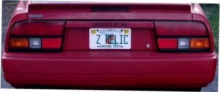

-
These are pictures I had that I figured should be shared here.
Ken's swap using a Z32 NA rear suspension. I believe he (or tempastasZ) was one of the first people to do it and post about it:

Butter's S14 5-lug rear suspension:

-
Nope, thats a 1" thick billet aluminum blockG-E wrote: WTF?
http://www.redz31.net/images/forum/rear … 3small.jpg
is that a limestone block in there ??????
and to clarify a few things....this swap was actually pretty cost effective. with a machine shop at my disposal those mounting peices I made were free. The entire rear suspension was from a 92NA 300zx which only cost $400.00, 2 KYP 8-way shocks were $100 a peice, so the total swap-over was less than adding the Nismo LSD to the stock NA rear.
After doing the swap the car really drove quite stiff, the upper shock towers are parallel to the ground where the Z32 shocks actually mount at an angle. I countered this later by adding angled upper shock mounts, which I don't have pics of, but completely made the ride nice.
Just a note the Z32 subframe made the stock NA wheels just touch the inside of the fender, rolling the fender made it ok, but any wider tire/rim combo would result in tires that stick outside the fender lines. I beleive this is why Tempestas and Butter used the S13 rear
BTW those pics were after a crash I had into a ditch, which bent several suspension items, thats why you see the indentation/scrape on the shock in this pic
hope some of this helpsused to have one of the first high horsepower NA to turbo cam'd 7000rpm pavement pounding z31's....now in process of building an LQ9 LS1 6.0L Z31 with all the goodies -
The tires actually were perfectly flush with the top of the fenders. the camber gain, although being a multi link, brought them in just enough to clear rolled fenders. I should be technical about it, it should be described as tire tuck as with SLA type suspension geometry actually pulls the tire in a bitJason84NA2T wrote:
That's a little troubling to me. My Zenetti's sit AT the outside edges of the fender flares on my 84 with an 88 suspension. It's only because of the camber setting and massive camber gain that they don't rub the inside lip when I go over big bumps. How much would you say it stuck them out? It looks like an inch or more from the pictures.
the stock 88NA rear required spacers for the z32NA wheels to fit, I can't remember where they were in relation to the 88 Fenders. If I were you, I'd recomend getting a low cost Z32 na rear subframe and swap on the s13-14 halfshafts and control arms, tempestas did that because his Cobra wheels stuck out like 4-5 inches…it looked really silly :lol:used to have one of the first high horsepower NA to turbo cam'd 7000rpm pavement pounding z31's....now in process of building an LQ9 LS1 6.0L Z31 with all the goodies -
Just a note for another option:
The early Q45 rear end is basically a mix of the Z32 N/A and TT rears. The Q45 uses an R200V with 3.538 gearing but has the TT style 6-bolt output flange. It also has the same sized axles as the TT being 32 spline.
I know for sure the 90-93 is like this and possibly the 94-96. Some models came with HICAS so you'll probably want to avoid those unless you want to try hooking it up.
Definitely a nice option if you're wanting a lower ratio rear with some good strength or simply if the Z32 rears are hard to find (like where I am).
Here are some pictures comparing the axles of the Q45 with the Z32 N/A:
http://www.machzracing.com/450ZX/Differ … tures.html
I should also add that the Q45 diff can be put in the Z32 N/A subframe but not the TT. The rear cover bolt spacing is slightly shorter on the Z32 N/A and the Q45. With the Z32 N/A rear you can swap over the Q45 diff, axles, and wheel bearing/wheel hub.
I believe the axle housings will swap but I want to say there was a slight difference. I have both of them laying around and can find the differences. I know that one of the arms of the Q45 suspension is a solid piece of iron instead of the folded steel and I believe the whole housing is iron as well. I believe the Z32 is aluminum but can't remember off hand. Not likely to break the Z32 housing but if you do, the Q45 is definitely a very strong alternative. Probably only needed if doing some extremely high powered drag racing.
The wheel bearing and hub is attached to the Z32 axle housing using the 4 bolts. The Q45 is attached using the same 4 bolts however is held on by a 5th, which is part of the parking brake assembly. There is a nut on back that holds on a piece that keeps one of the springs in and holds the wheel bearing/hub assembly on as well. (took me a while to figure that one out :lol: ) -
Here is my write-up on Ziptied. http://www.ziptied.com/forums/index.php?topic=6734.0
I think that's as good as you will see, since a lot of the install is fly by the seat of your pants.
As for the seatbelts in the pic, they are not even bolted in. I now have Buddy Club full bucket seats and the shoulder harness is bolted to the cross beam at the base of the strut towers for now.sigpic -
Just a correction, the Q45 spindle is aluminum like the Z32 spindles. Someone on HybridZ said something about a part of the Q45 setup being iron but I can't seem to find what he's talking about (unless he's working with a newer model than I am).MachZ wrote: I know that one of the arms of the Q45 suspension is a solid piece of iron instead of the folded steel and I believe the whole housing is iron as well. I believe the Z32 is aluminum but can't remember off hand. Not likely to break the Z32 housing but if you do, the Q45 is definitely a very strong alternative. Probably only needed if doing some extremely high powered drag racing.
Anyways… so far everything is swapping right from the Q45 rear to the Z32 N/A rear. Its quite awesome. :lol: -
So what is the different between the s14 rear subframe and s13 subframe.Ive heard its the location of where the struts mount.
So the ideal subframe will be one off of a s13 correct?1986 Current build
HX35/40 60mm wheel,480cc injectors,nistune, spearco 2-221,6 puck,walbro fp,solid cross and diff,jason motor mounts,poly everywhere else.
 -
I actually wrote a pretty long response to that, but I guess it was erased due to the hacking…
Noone knows for sure whether the S13 is the ideal one to use or not as noone to my knowledge has used it. I've decided on using it as I believe that it will be the best one to use and get the widest tire without making custom strut towers. The S13 suspension isn't as wide as the others, and S13 struts are, as far as I can tell, a perfect height to be able to use them without making the stock strut tower taller to accomodate it.1985 NA2T(now RB) * 1988 SS x2 * 1984 AE x3 * 2006 350Z

-
Ok, so butter used the S14 rear, Ken in AZ used the NA z32 rear, nobody has used the s13 rear but OK85zx is working on it.
What about the Z32TT rear with the R230 diff? its a stronger diff. But are the axles stronger as well? meaning all the way out to and including the axle stubs off of a Z32TT?
This just sounds like the best route over all. I could get the 230 diff that comes with strong engough axles to run 9's potentially AND get the multi link rear that would get rid of the super negative camber when launching right?
I'll go over everything again but so far this is what I'm gathering is that nobody has tried the z32tt rear end.85 Z31 6.0 LSX turbo 766whp/792wtq
04 GTO, LS6, big cam, porting, N20… underway for summertime daily driver. -
To Simplify things....
S15-The best IMO. Arms and mounting points on the subframe are updated. Option video "Silvia/180sx Super Tuning" special illistrates this during their build on a S13 silvia Q's when they swap one in. You should be able to find it on YouTube. Will likely require some kind of lower coilover section swap so you can use S13 coilovers. They do come to the U.S. from time to time cause S13 guys like the LSD.
S13-Availible anywhere, usually for free. Certainly nothing wrong with using one and will give you the least amount of trouble during install.
S14-Track is a little wider (20mm?) than S13. I believe some arm mounts were moved during design. Nissan used the higher mounted rear struts, I think, to increase stroke. When you drive an S13 and then drive an S14, the S14 just feels more stable when cornering over dips, etc. probably because of this. Even so, I wouldn't recommend doing what I did. Too much trouble. Again, use the shorter S13 coilovers with an S14 lower section in back.
Z32-Not really a good idea. Track is way too wide and you'll end up with the 911 look or backwards offset wheels. If you want the diff/axles, try fabbing them into one of the other subframes or the stock one.
Putting dem in…
Step 1:Prep. Torch out the Z31 front subframe bushings and remove the center pipe part (for the rest of this write-up, I will call this part "Bob"). On the donor, cut off anything (vibration dampner)forward of the circular part around the front mounts as it will get in the way.
Step 2:Test mount. Put "Bobs" on the car. You need to spend a long time centering the subframe or you will be screwed. To make things easier, it's a good idea to strip down the donor to the basic frame. Place the rear mounts on the car's unibody beam. Measure from ARM MOUNTS to fender lips and the front mounting studs that secure "Bob". A lot of the unibody structure and the diff skews from the centerline, so take care where you are taking your measurements. Clearance the underbody for the arms and front hoop with a hammer and various methods. Get it up in the car as far as you can. You will end up with the nose of the diff pitched up slightly. This is fine.
Step 3:Weld. While everything is held in place, weld supporting members that you fab up out to "Bobs". Remove everything and finish weld. The circular wall around the donor's old mount bushings that you're welding to are not very sturdy, so it's a good idea to torch out the bushings and reinforce in there. Note that "Bob" is solid now. This doesn't really make the ride as harsh as you would think.
Step 4:Make rear mount studs. Drill your holes through the rear floor/beam. You need a piece of pipe long enough to extend almost through it and the subframe mount (get the right schedule to fit tight in the mount). Get a section of threaded rod longer than the pipe (I think I used 9/16 thread). Get a big, thick washer that fits around the pipe. Assemble, and weld the top of the rod, pipe, and washer together. Put the stud assembly in the car and tighten the subframe down with a locknut and washer. Weld the washer portion to the cargo floor. Remove the subframe, and make a penetrating weld for the beam to stud joint. Sweet.
Step 5:Go get custom prop shaft. Measure from tip of output shaft on trans to flange on the diff. Bring in your z shaft and donor's shaft and they should take care of the rest. Result should be brand new prop shaft.sigpic -
Subframe my buddy is putting into his M30. He decided to fab up a plate containing the rear studs which will then be welded to the unibody frame member. Note the 2 holes in the middle of the plate for the old diff mount studs to go through, aiding installation. I like it.
You CAN buy the S-chassis mount studs from Nissan. However, depending on your method of install, they may not be long enough.sigpic -
S13 rear end in Z31
I noted from the above that no one had actually tried the full S13 subframe swap so far in a z31.
I spent a day at the local yard and pulled one out of a relatively clean (for Chicago, that is) '93 240.
I'll post up some pics if everything works out OK.
One question: My diff output flanges and sideshafts have a different bolt pattern than the 5-bolt flanges from the Q45 / Z32 noted above. Mine are actually 3 sets of 2 bolts in a triangle pattern. Does anyone know if I can swap out a differential from a Q45 / Z32 and just change the output flanges to fit my axles?
Thanks.
Mike.'84 AE Z31 - last time it was dyno'd - 392RWHP, 431 Ft-Lb RWTQ.
For this year - building a VG33, bigger turbo (GT35R BB), just got done with making my own custom roll cage, all of the bodywork and a new paint job!
Want more details? Check out my profile on vg30et.com! -
88 SS with vg30det
has rust, needs paint , but runs like a raped ape on speed -
This thread has been way to quiet. Here's some info from my endless searching that isn't covered in this thread.
R32
Z32 N/A
S13 (someone have one to measure out?)
Z32 aftermarket control/tension arms (Sport Compact Car pic)
There's a pretty good writeup on 240sxforums.com with plenty of comparison pics for swapping the beefier Q45 R230 differential into the S13/S14 subframe.
http://www.240sxforums.com/forums/showt … p?t=101576
(Copy/pasted from 240sxforums.com)
The 90-96 Q45 (R200) features the same beefy 6-bolt 30-spline axles, hubs, and output shafts used in the 90-96 Nissan 300ZX TT (R230).
All Infiniti Q45's came with VSLD differentials, making this a great upgrade for those looking to upgrade to R230 durability without having to modify the S13/S14 subframe.
The 90-96 Q45 had a 3.54 final gear, and the 97-01 had a 3.69.
The swap is VERY easy to do, and is a rather bolt-in affair using the S13 or S14 differential cover from your current differential.
Parts list needed:
A.) (Your Model S13 or S14) differential cover
B.) Q45 VLSD differential
C.) Q45 or 300ZX TT Wheel Hubs (great upgrade for the 4-lug guys who have been looking for a reason to go 5-lug)
D.) 300ZX TT Driver Side Axle (installed on driver side of 240SX) and Infiniti Q45 Driver Side Axle (installed on passenger side of 240SX).
1.) Start out by swapping the Q45 differential cover with your factory S13 or S14 diff cover.
2.) You will need to take a marker of same kind, and draw out the 240sx driveshaft yoke bolt pattern onto the Q45 input shaft, and prepare for drilling (4) holes.
You could also order a Q45 yoke and have it swapped onto the 240SX driveshaft. However, I dont see the need for the added expense, as the Q45 input shaft flange is large enough that I dont feel tapping four more holes will hurt the structural rigidity.
3.) Once drilled install back onto the Q45 differential.
4.) After this step is finished, simply bolt the differential into the 240sx subframe, and re-install. -
seems to be 58-3/8" without the rotors, control arms level with the crossmember, so maybe another 1/8" at normal position, 58-1/2-ish… last I checked the inner part of the rotors were 8mm so lets say almost 60

{kind=link}
Copyright © 2006–. All rights reserved. Privacy Policy